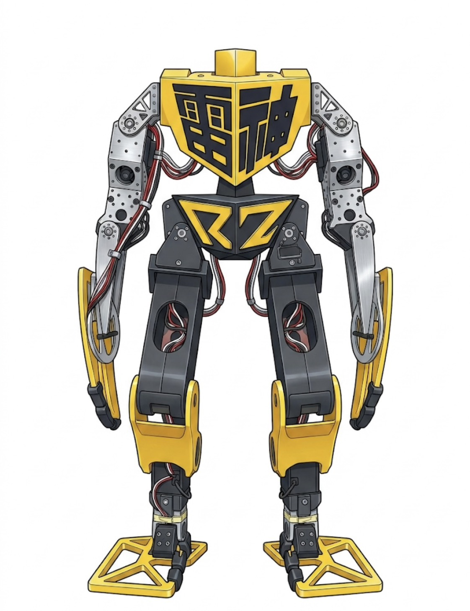
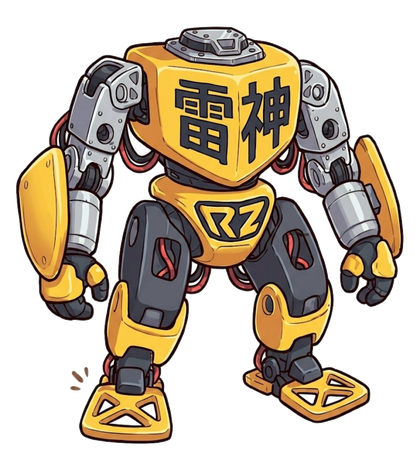
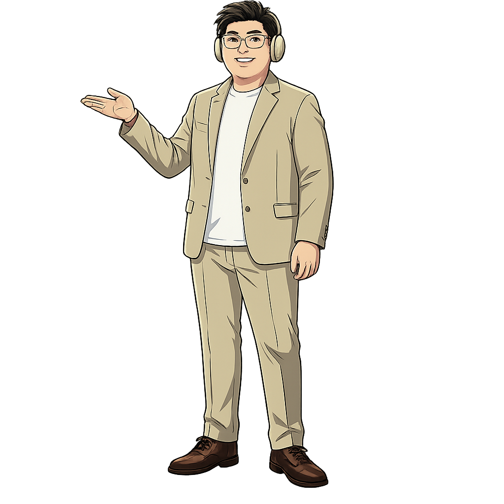

ゲーム × 学び × テクノロジー
楽しさから、
可能性が
広がる
あなたの知的好奇心に、火を灯す
ゲームで遊び、学び、つくる。
らいとすぴりっつは、「楽しい」を起点に
あなたの可能性を広げるパートナーです。


Scroll
ゲーム × 学び × テクノロジー
あなたの知的好奇心に、火を灯す
ゲームで遊び、学び、つくる。
らいとすぴりっつは、「楽しい」を起点に
あなたの可能性を広げるパートナーです。

News
ニュース
0年+
ロボット・AI開発歴
0領域
AI × ロボット × 教育
0種
提供サービス
もりけん（森田健太）は、ゲームと学びとテクノロジーが大好きなクリエイター・エンジニアです。
「楽しい！」から生まれる好奇心こそが、一番の成長エンジン。ゲームで遊ぶ、仕組みを知る、自分でつくってみる——そのサイクルが、あなたの可能性をどんどん広げます。
らいとすぴりっつは「楽しい」を起点に、あなたの知的好奇心に火を灯すパートナーです。一緒に楽しんで、一緒に成長しましょう！
らいとすぴりっつの理念は、「魂に火を灯す」。
その手段が AI × ロボット × 教育 です。AIは人の力を引き出す道具。ロボットはアイデアを形にする技術。そして教育は、それらを使いこなす人を育てる取り組みです。
目指すのは 「人とAIとロボットの共成長」。つまり、テクノロジーに使われるのではなく、テクノロジーとともに成長していける組織と社会をつくることです。

森田健太（もりけん）
Kenta Morita
Founder & Creator — Japan-based
Robot
ロボット制作
アイデアを動く機械に。設計からソフトウェアまで一貫対応
AI
AI活用支援
ChatGPTなどのAI導入で、日々の業務を効率化
Edu
研修・教育
AIを使いこなす人材を育てる、研修・ワークショップ
DX
DX推進・伴走支援
現場に寄り添い、定着するまで伴走するDX支援
こんなお悩みはありませんか？
そのお悩み、ひとつの窓口で解決できます。
らいとすぴりっつは、AI・ロボット・アプリを横断して開発できる、数少ない開発パートナーです。
らいとすぴりっつだけで、全部つながる
窓口ひとつで、企画から完成まで
アイデアから形にするまで、らいとすぴりっつにおまかせ
複数の会社に発注する手間なく、企画・設計・試作・AI開発・完成までを一貫して担当します
AI・ロボット・アプリを、らいとすぴりっつだけで横断
ふつうは別々の3人。らいとすぴりっつはこの3つをつなげます
通常は3社・3人に分かれる専門領域を、ひとつの窓口でまとめて担当します
抽象的な話ではなく、実際にこういうものを作ってきました。
歩く・走る・迷路を解く・猫のように動く・人型。大会で優勝した経験も。
話題のAIを使うだけでなく、自分専用のAIをつくって仕事を手伝わせることもできます。
スマホアプリ、Webサイト、業務ツール、シミュレーターなどを作れます。
たとえば、こんな相談も
「高齢者と会話するロボットが欲しい」
この一連を、別々の会社に頼まず、らいとすぴりっつだけで通しでできます。
だから話が通じやすく、試作までが早い。
ご相談から納品までの流れ
すべての工程を同じ担当者が受け持つため、言った内容が途中で変わりません
STEP 01
ご相談
構想段階でOK。やりたいことをそのままお聞かせください。
STEP 02
ヒアリング・企画
課題を整理し、実現方法と進め方をご提案します。
STEP 03
試作
まず動くものをつくり、方向性を確認します。
STEP 04
開発
試作の手応えをもとに、本開発を進めます。
STEP 05
納品・伴走
納品後の改善や運用のご相談にも対応します。
※ 途中の工程だけのご依頼（試作のみ・技術相談のみ）も歓迎です。
SVC — 01
ゲーム開発
ブラウザで気軽に遊べるオリジナルゲームを企画・開発。「楽しい」を入り口に、新しい体験と挑戦のきっかけをつくります。
SVC — 02
Webサイト制作（個人向け）
個人・フリーランス・小規模活動向けのWebサイト制作。あなたの活動や想いを、丁寧にかたちにします。
SVC — 03
学習・教育支援
AIやプログラミングを楽しく学べるワークショップ・コンテンツ制作。「できた！」という体験を、一人ひとりに届けます。
SVC — 04
クリエイター協業
「一緒に何か作りたい」を歓迎します。ゲーム・Web・AI・ロボットが交わるアイデアなら、なんでもご相談ください。
SVC — 01
ロボット制作
小型〜中型ロボットの企画・試作・製作に対応。本体の設計から中身のソフトウェアまで一貫して担当するため、途中の仕様変更にも素早く対応できます。
SVC — 02
AI活用支援
ChatGPTの導入から業務の自動化まで対応します。自社の業務に合う形でAIを組み込み、日々の作業時間を減らします。
SVC — 03
DX推進・伴走支援
ツールの導入から業務フローの見直しまで対応。導入して終わりではなく、現場に定着するまで伴走します。
SVC — 04
研修・教育支援
AIやDXを学ぶ研修・ワークショップを提供します。「難しそう」を「使ってみたい」に変え、社内にAIを使いこなす人材を育てます。
SVC — 05
Webサイト制作（法人向け）
中小企業・スタートアップ向けのWebサイト制作。伝えたい価値が正しく伝わるよう、構成から文章まで丁寧に設計します。
SVC — 06
コラボレーション・技術監修
取材・共同制作・技術監修など、柔軟にご相談ください。AI・ロボット・教育が交差するプロジェクトを歓迎します。
これまでに設計・製作したロボットや、3Dプリンターで出力した造形物を、動画で公開しています。実際に動いているところを、そのままご覧いただけます。
チャンネルで動画をすべて見る
次世代インターフェース研究プロジェクト
人とテクノロジーの新しい関係性を探求するプロジェクト。詳細は近日公開予定です。
雷神、きょうもいます。
かたい説明のかわりに、ふたりの会話で。気になるところだけ読んでください。
東京理科大学大学院修了。
20年以上にわたり、ロボットやソフトウェア、AIの開発に携わってきました。学生時代にはロボット競技会で優勝を経験し、現在はAIを活用したサービス開発や企業の業務改善、新規事業の立ち上げ支援を行っています。
私の強みは、アイデアを実際に動く形にできることです。多くの開発現場では、アイデアを考える人・設計する人・プログラムを作る人・AIを開発する人が別々ですが、私は企画から開発、完成まで一人で対応できます。
そのため、「AIを活用したい」「新しいサービスを作りたい」「業務を効率化したい」といった、まだ漠然とした段階からでもご相談いただけます。
🤖 AI活用支援
💻 システム・アプリ開発
🔧 ロボット・ものづくり
🏆 ロボット競技会優勝
自ら設計・製作した四足歩行ロボットでロボット競技会優勝。
🦾 二足歩行ロボット開発
ロボット本体の設計からプログラム開発まで一人で担当し、短期間で開発を実現。
🚗 自動運転技術の研究
大学院では安全な自動運転技術の研究に取り組み、独自の制御技術を開発。
✨ AIサービス開発
生成AIや音声AIを活用したシステム開発、企業向けAI導入支援を多数実施。
AI開発
アプリ・システム開発
ロボット開発
試作・ハードウェア
| プログラミング | C / C++ / Python / JavaScript / HTML / CSS / Swift / Java |
| AI | OpenAI API / LLM / LoRA / 音声AI / AI Agent / Claude Code |
| ロボット | ROS / 自律移動 / 経路計画 / Raspberry Pi / マイコン制御 |
| CAD・製造 | SolidWorks / Fusion 360 / CNC加工 / 3Dプリンタ |
| OS | macOS / Linux（Ubuntu）/ Windows |
はい、大丈夫です。「何ができるか分からない」段階からのご相談を歓迎しています。やりたいことを伺いながら、実現方法はこちらからご提案します。
いいえ。「技術的に実現できそうか」「どれくらいの規模になりそうか」を確認するだけのご相談も歓迎です。まず話してみて、それからご判断ください。
はい。試作機1台、業務ツールひとつ、研修1回といった単位からお受けしています。途中の工程だけ（試作のみ・技術相談のみ）のご依頼も可能です。
AI顧問として、定期的な技術相談・AI活用のアドバイスを行う形にも対応しています。詳しくはお問い合わせください。
はい。お打ち合わせはオンラインでも対応しています。まずはお気軽にご連絡ください。
ご依頼・ご相談は、フォームまたはメールでご連絡ください。「まだ構想段階」「何から相談すればいいか分からない」——そんな段階からで大丈夫です。まずは、考えていることをそのままお聞かせください。
よくあるご相談

